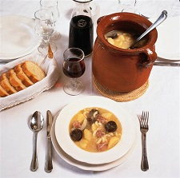

|
Información sobre diferentes pueblos emblemáticos y rutas pintorescas en la Vall d'Aran |
 |
Información sobre la estación de esquí de la Vall d'Aran, Baqueira Beret. Instalaciones disponibles, pistas, dificultad, clases, servicios. Toda la información para poder disfrutar de una jornada de esquí. |
 |
Información sobre rutas de mountain bike, alquiler de bicicletas y eventos relacionados con la mountain bike en la Vall d'Aran |
|  |
Información sobre el tipo de gastronomía de la Vall d'Aran. Productos típicos y caracterísiticos del Valle y los mejores platos y recetas de la gastronomía de la Vall d'Aran. |